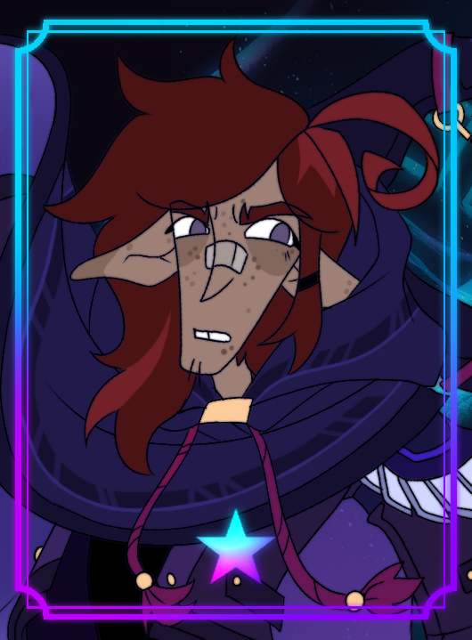

Живые знают, что умрут, а мёртвые ничего не знают,
Екклесиаст 9:5
и уже нет им воздаяния, потому что и память о них предана забвению.
Мир медленно погружался в забвение. Город выглядел как древняя гробница, тщательно законсервированная под именем «жизнь». Улицы были пусты — или почти пусты, если не считать редких прохожих, появляющихся из темноты переулков, как привидения, спешащие никуда в частности.
Кеннет Хилл стоял в тени портика старого отеля, наблюдая за тем, как автомобили с красными габаритными огнями медленно проплывали по проспекту. Ночь была чёрная и липкая. Город жил ночью, как некромант живит мертвецов: толку мало, но движение есть.
— Странная ночь, — пробормотал Кеннет, прежде чем заметил человека, выходящего из-за угла с предельно спешащей походкой. За ним, неспешно и грациозно, шёл второй — высокий, одетый в длинное пальто цвета старого дыма.
Кеннет потерял лицо. Вот это да. Даже здесь, на краю света, его нашли.